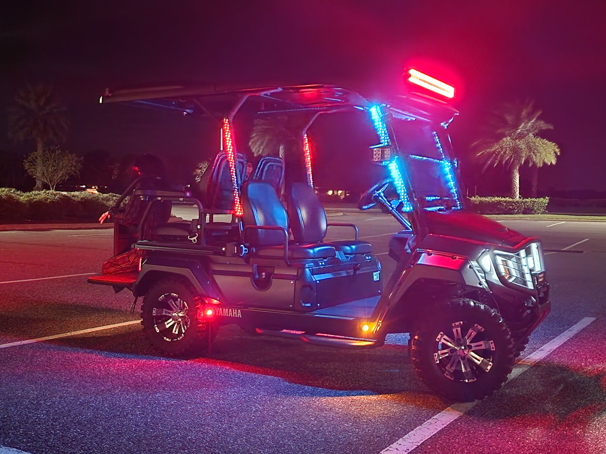
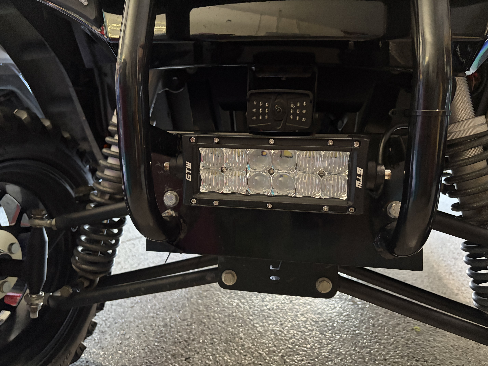

Auxiliary Vehicle Electronics
Across the Yamaha UMAX Rally 2+2 and Drive2 platforms, I engineered and integrated isolated 12V auxiliary electrical systems across three utility vehicles—supporting high-draw lighting, audio, and dual-view camera hardware without risking starter battery depletion.
12V Auxiliary Power & Electronics Architecture
Click any block to inspect specsPrimary 12V Starter Bank & Alternator
Supplies standard vehicle ignition and OEM electronics. Isolated from high-draw auxiliary loads to guarantee reliable engine cranking.
System Architecture & Engineering
01.Dual-Battery Power Isolation
Installed a secondary 12V accessory battery paired with a Voltage Sensitive Relay (VSR) to isolate aftermarket loads from the primary starting bank. When the engine is running, the VSR bridges both banks to charge the auxiliary battery; when parked, it disconnects automatically to prevent starter battery drain.
02.Load Distribution & Weatherproofing
Routed properly gauged power and ground runs through dedicated fuses and ignition-switched rocker panels to control the roof floodlight bar, multi-function chase bar, whip lights, underglow, and G3 Party Bar audio system. Sealed connections and under-windscreen routing protect the harness against rain and washdowns.
03.Custom Aluminum Fabrication & Visibility
Fabricated custom aluminum mounting brackets to integrate a dual-view front and rear camera system alongside the forward LED light bar, positioning the sensors cleanly clear of suspension travel while routing video feeds to the cockpit display.
Build & Integration Gallery



